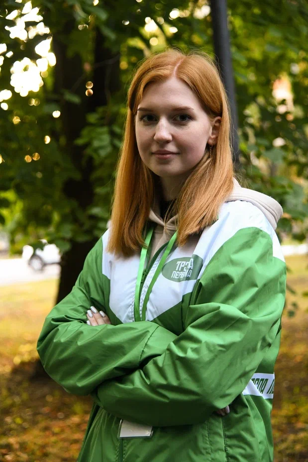

Факты о Лучшем профорге
1.Знак зодиака - лев
2. Любимый напиток кофе с молоком и лимонад «натахтари» с фейхоа
3.Любимая еда фрукты и ягоды
4. Обожает свой натуральный цвет волос
5. По натуре сова
Студентка
Юлия начала заниматься активной студенческой жизнью
с начала 1 курса, она сразу стала профоргом своей группы и приняла участие в Тропе Первака,
где одногруппники сразу выбрали ее капитаном команды, а на
втором курсе она уже состояла в группе организаторов. В данный момент
Юлия организовавыет мероприятие «В космос». Конечно настоящий профорг
перед начялам должен опробывать все на себе, поэтому она принимала участие
в меприятие «MoreQuiz»
Спортивный путь Юли начался 10 лет назад, тогда она первый
раз пришла на тренировку по баскетболу. Так там и осталась. Самой запоминающейся
стала игра в региональном этапе соревнований школьной баскетбольной лиги «КЭС-Баскет»,
где на середине матча они проигрывали 16 очков, но сумели одержать победу. За время
занятий баскетболом она смогла заработать второй взрослый разряд. Сейчас же являеться
капитаном команды ИВТС и защищает честь своего института на университетских соревнованиях!

В начале этого учебного
года Юля попробовала себя в качестве наставника. И вот, что она рассказала
нам о своём новом опыте: «В этом году я стала помощником тьютора. Такая роль
мне досталась впервые, было интересно себя в этом попробовать. Так как ребята
были с той же специальности, что и мы, у нас нашлось немало общих интересов.
Мы много общались, помогали им адаптироваться к студенческой жизни. Сейчас же
многие из них стали активистами нашего профбюро, а это означает, что мы с
тьютором провели хорошую работу и смогли заинтересовать ребят активной
студенческой жизнью!» Как активист профсоюза Юля очень ответственная. Она не
упускает возможности поучаствовать в организации профсоюзных мероприятий,
например прошедшей прошлой весной квест-игры «В космос», которая вскоре вновь
пройдет в стенах нашего университета и Юля снова принимает участие в её
организации
1) Юлия из ИВТС, а это первый институт, первый корпус, и 2 первых места на «Студлидере ТулГУ»
2) Юлия супер ответственная и вы увидите это на конкурсе.
3) А третью причину вы увидите на самом конкурсе, ведь Юлия вас удивит.